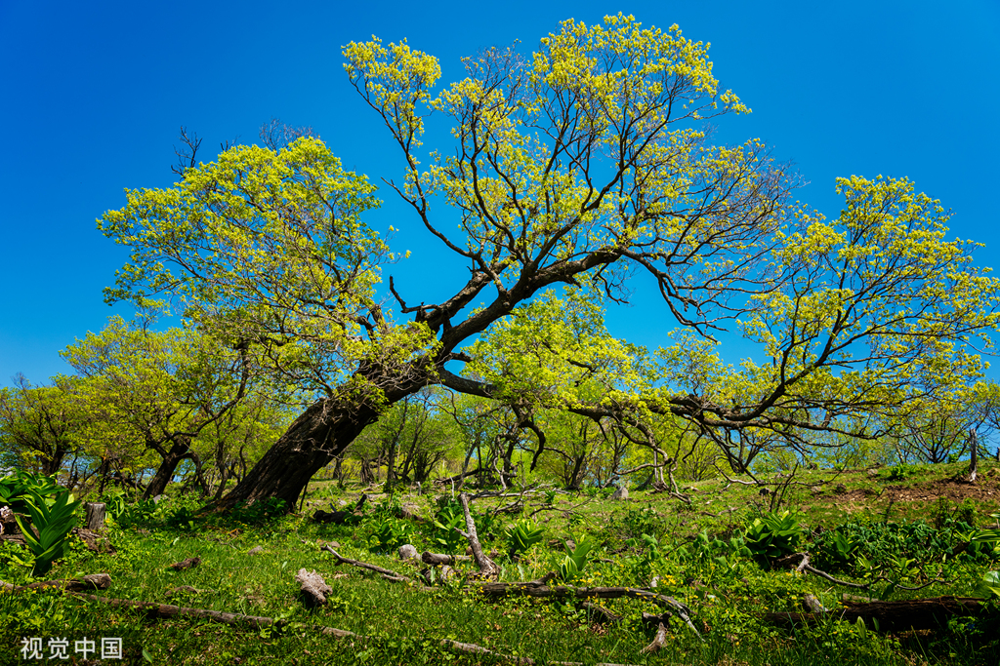
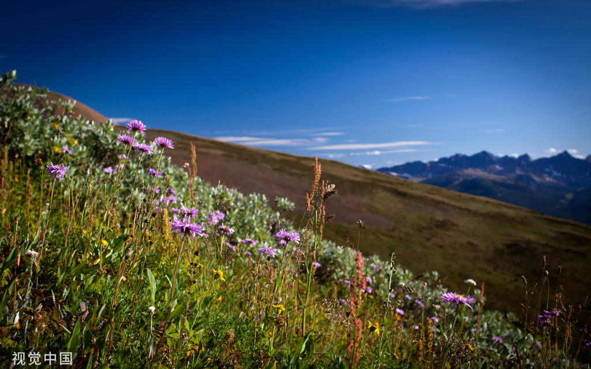

高山花园
长白山在雪线之上用亿万朵野花编织的盛大幻梦

高山花园，是长白山在雪线之上、云雾之间，用亿万朵野花编织的一场为期仅两周的盛大幻梦。它不在土地里生长，而在海拔1400米至2000米的高山苔原上燃烧，是生命向严寒与疾风发起的、最绚丽而短暂的反抗。
📊 高山花园的科学数据标尺
在惊叹其绚烂前，几个数据揭示了这场花事的极端与珍贵：
- 时空尺度：每年仅在7月中旬至8月初绽放，最佳花期常不足20天。花园主体位于海拔1700米以上的苔原带，面积广阔。
- 生命形态：由牛皮杜鹃、苞叶杜鹃、毛毡杜鹃、宽叶仙女木等数十种高山花卉构成。为适应环境，植株普遍低矮，多数贴地生长，高度仅5-15厘米，形成独特的"地毯式"花海。
- 环境阈值：生长期短，年均气温-7℃至3℃，年降水量600-1300毫米，风力常达6级以上。这里的每一朵花，都是在极限气候参数下完成的奇迹。
🌺 苦寒中的怒放：数据定义的生存策略
这不是寻常的园林，而是高山苔原生态系统的顶级群落。其绚烂背后，是严苛的数据生存法则：植物用不足30天的速生周期完成发芽、开花、结籽；叶片常被密毛或革质化，以减少水分蒸发、抵御紫外线；发达的根系生物量可达地上部分的5-10倍，以牢牢抓住贫瘠的薄土，抵抗强风。每一寸匍匐的美丽，都是对"生存"二字最精确的演化计算。
🎨 色彩的层次：短暂而精确的物候序列
花海的色彩并非同时涌现，而是遵循着精确的海拔与物候序列。通常，鸢尾、溪荪的蓝紫色会率先在稍低的湿润地带点亮；随后，金莲花的明黄与各种杜鹃的粉白、淡紫在山坡上铺开；最后，仙女木的洁白与红景天的暗红在接近山脊的岩缝中收尾。这种在垂直数百米、水平数千米范围内递次上演的花期，宛如一首严格按照气候指令演奏的交响乐。
🔬 生态的指针：全球变化的敏感温度计
在地质学家与生态学家眼中，这片花园的价值远超观赏。它是监测全球气候变化的天然实验室与预警系统。花园的花期始末日期、植被覆盖度、种群海拔边界线等数据，都是反映气温与降水变化的敏感指标。其兴衰直接关联着冻土层的稳定与整个高山生态系统的健康，是悬挂在长白山颈项上一枚精密的生态宝石。
✨ 探访须知：一场与时间赛跑的朝圣
- 精准时机：出行前务必查询官方花期预报，最佳窗口期极短，通常集中在7月最后两周。
- 绝对保护：这里是极其脆弱的苔原生态系统，根系土壤一旦被踩踏，需要数十年乃至上百年才能恢复。必须严格沿指定木栈道行走，绝对不可踏入花海。
- 瞬息天气：高海拔地区天气瞬息万变，需备好防风、防水、保暖衣物，即便盛夏，气温也可能骤降至10℃以下。
- 静默观赏：请用目光和镜头去爱抚。你的每一次驻足与屏息，都是对这场集体生命盛宴的最高礼赞。

